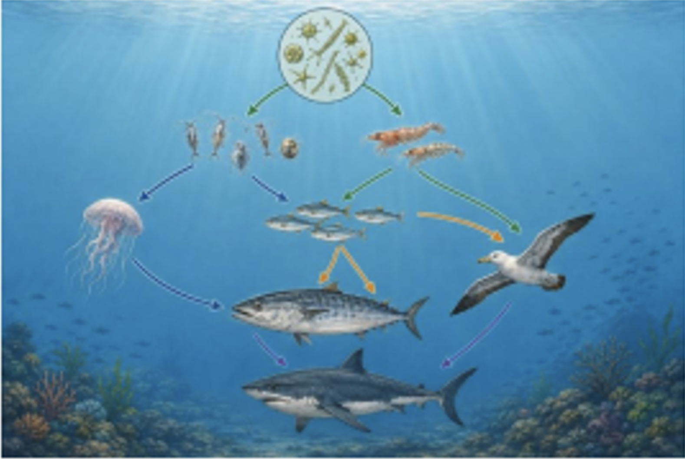
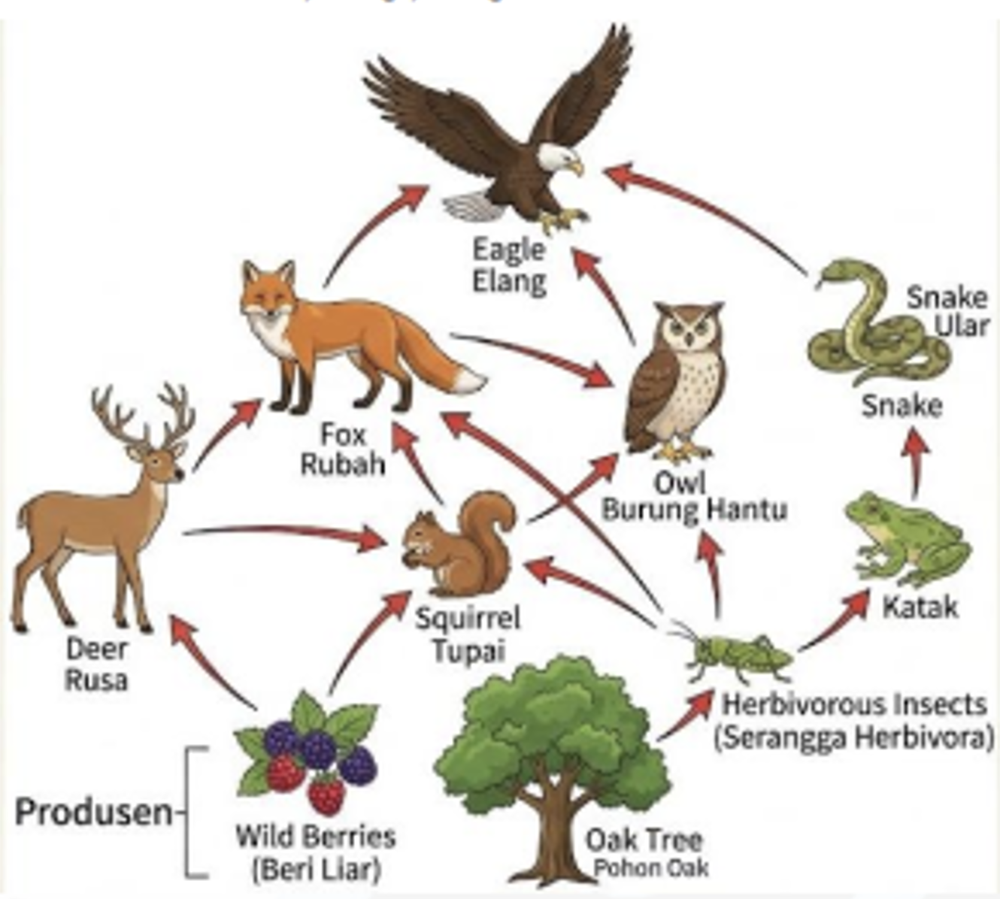
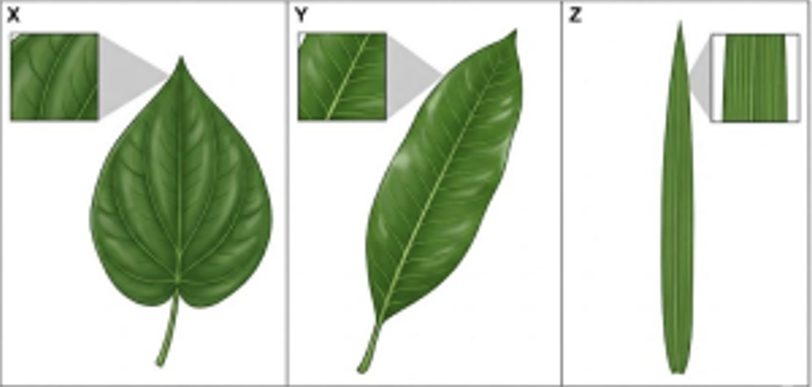
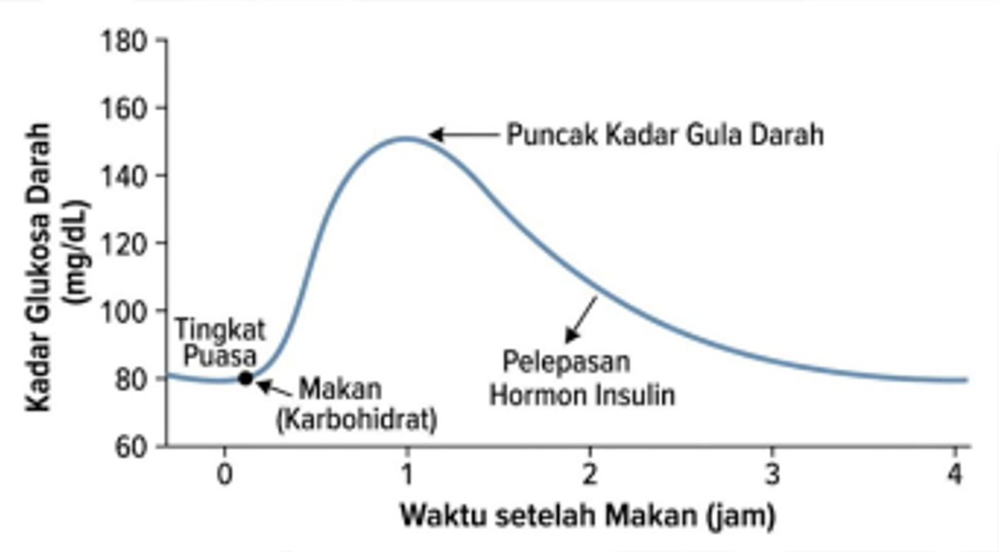
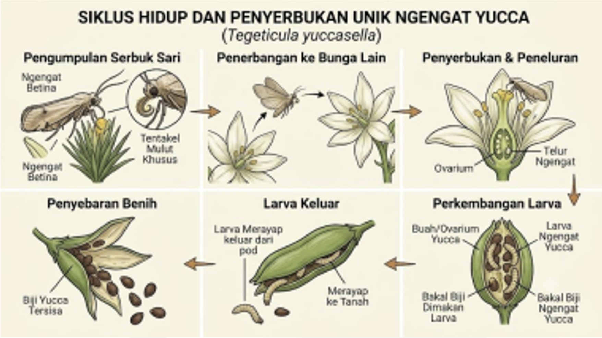
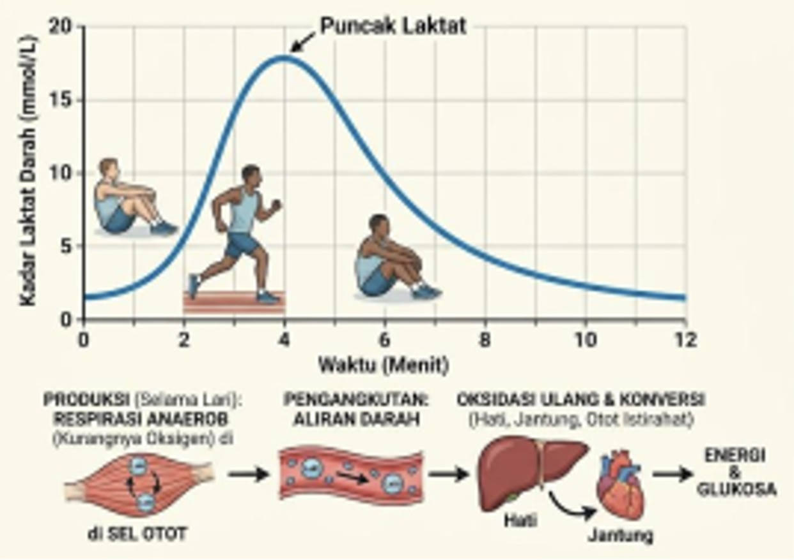
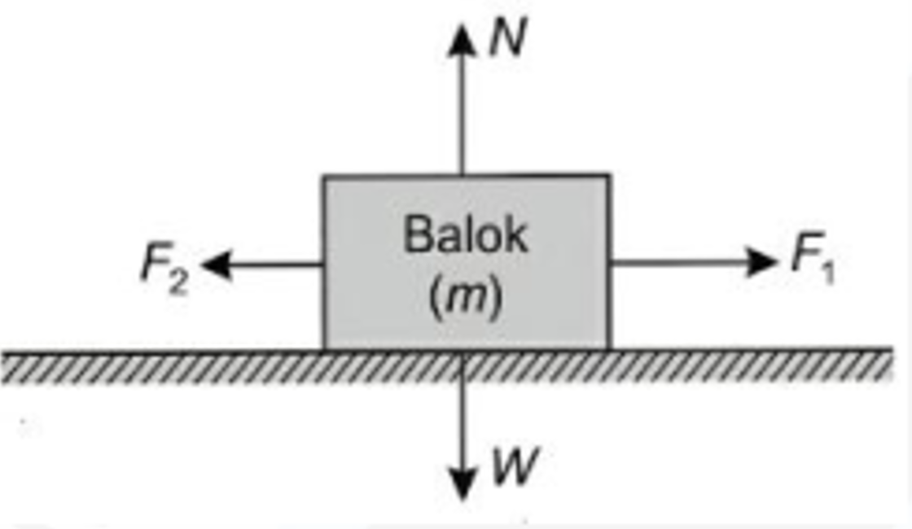
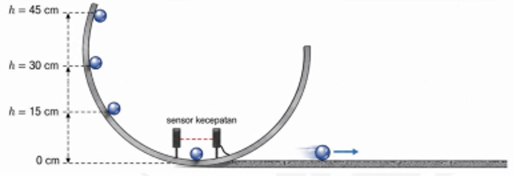
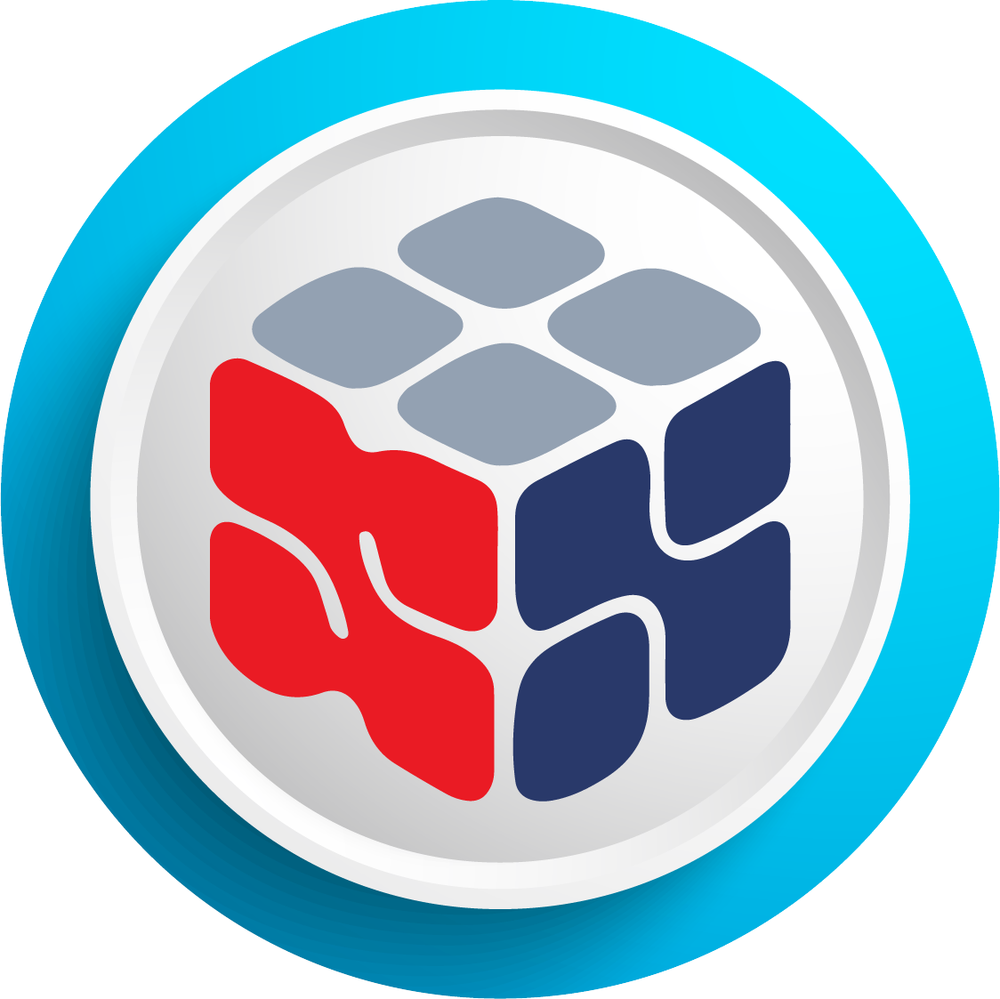

<!DOCTYPE html>
<html lang="id">
<head>
<meta charset="UTF-8">
<meta name="viewport" content="width=device-width, initial-scale=1.0">
<title>Simulasi CBT — OSNP SD 2026</title>
<style>
  :root{
    --navy-900:#081b3a;
    --navy-800:#0b2545;
    --navy-700:#13315c;
    --navy-600:#1b3a6b;
    --gold-500:#c9a227;
    --gold-400:#d9bb55;
    --gold-100:#f6ecc9;
    --crimson-600:#b3242a;
    --crimson-700:#8f1b20;
    --green-600:#1f7a54;
    --green-100:#e3f3ec;
    --bg:#eef1f7;
    --paper:#ffffff;
    --ink-900:#10182b;
    --ink-600:#45506b;
    --ink-400:#7480a0;
    --line:#d8deE9;
    --font-display:Georgia,'Times New Roman',serif;
    --font-body:'Segoe UI',system-ui,-apple-system,Roboto,Arial,sans-serif;
    --font-mono:'SF Mono','Consolas','Roboto Mono',monospace;
    --shadow-card:0 10px 30px -10px rgba(11,37,69,.25);
    --shadow-soft:0 2px 10px rgba(11,37,69,.08);
  }
  *{box-sizing:border-box;}
  html,body{height:100%;}
  body{
    margin:0;
    background:
      radial-gradient(1200px 600px at 15% -10%, #12336b 0%, rgba(18,51,107,0) 60%),
      radial-gradient(1000px 500px at 110% 10%, #0f2c58 0%, rgba(15,44,88,0) 55%),
      var(--bg);
    font-family:var(--font-body);
    color:var(--ink-900);
    -webkit-font-smoothing:antialiased;
  }
  #app{min-height:100vh; display:flex; flex-direction:column;}
  a{color:inherit;}
  button{font-family:inherit;}
  ::selection{background:var(--gold-400); color:var(--navy-900);}

  button:focus-visible, input:focus-visible, textarea:focus-visible, select:focus-visible, [tabindex]:focus-visible{
    outline:3px solid var(--gold-500);
    outline-offset:2px;
  }

  @media (prefers-reduced-motion: reduce){
    *{animation-duration:.001ms !important; animation-iteration-count:1 !important; transition-duration:.001ms !important;}
  }

  /* ===================== HEADER RIBBON ===================== */
  .ribbon{
    background:linear-gradient(180deg,var(--navy-700),var(--navy-900));
    border-bottom:3px solid var(--gold-500);
    color:#fff; box-shadow:var(--shadow-soft);
  }
  .ribbon-inner{
    max-width:1180px; margin:0 auto; padding:14px 22px;
    display:flex; align-items:center; gap:16px;
  }
  .ribbon-emblem{flex:0 0 auto; filter:drop-shadow(0 2px 3px rgba(0,0,0,.35));}
  .ribbon-titles{flex:1 1 auto; min-width:0;}
  .ribbon-eyebrow{
    font-size:11px; letter-spacing:.14em; text-transform:uppercase;
    color:var(--gold-400); font-weight:700; margin:0 0 2px;
  }
  .ribbon-title{
    font-family:var(--font-display); font-size:20px; margin:0; line-height:1.25; letter-spacing:.01em;
  }
  .ribbon-sub{margin:2px 0 0; font-size:12.5px; color:#c9d4ec;}

  /* ===================== LAYOUT WRAPPERS ===================== */
  .stage{
    flex:1 1 auto; display:flex; align-items:flex-start; justify-content:center;
    padding:38px 18px 30px;
  }
  .stage.center{align-items:center;}
  .footer-note{
    text-align:center; font-size:11.5px; color:var(--ink-400); padding:14px 10px 22px;
  }

  /* ===================== CARD / PAPER ===================== */
  .card{
    background:var(--paper); border-radius:6px;
    box-shadow:var(--shadow-card); border:1px solid var(--line); position:relative;
  }
  .card-gold-edge{ border-top:4px solid var(--gold-500); }

  /* ===================== LOGIN SCREEN ===================== */
  .login-wrap{width:100%; max-width:460px;}
  .login-head{text-align:center; margin-bottom:18px;}
  .login-head .kicker{
    font-size:11.5px; letter-spacing:.16em; text-transform:uppercase;
    color:var(--navy-700); font-weight:700;
  }
  .login-head h1{ font-family:var(--font-display); font-size:24px; margin:6px 0 2px; color:var(--navy-900); }
  .login-head p{margin:0; font-size:13px; color:var(--ink-600);}
  .login-card{padding:30px 30px 26px;}
  .field{margin-bottom:16px;}
  .field label{
    display:block; font-size:12.5px; font-weight:700; color:var(--navy-800); margin-bottom:6px; letter-spacing:.01em;
  }
  .field input, .field select{
    width:100%; padding:11px 13px; border:1.5px solid var(--line); border-radius:4px;
    font-size:14.5px; color:var(--ink-900); background:#fbfcfe; transition:border-color .15s, box-shadow .15s;
  }
  .field input:focus, .field select:focus{
    outline:none; border-color:var(--navy-600); box-shadow:0 0 0 3px rgba(19,49,92,.12); background:#fff;
  }
  .field select{cursor:pointer;}
  .field select option:disabled{color:var(--ink-400);}
  .field .hint{font-size:11px; color:var(--ink-400); margin-top:4px;}
  .btn{
    display:inline-flex; align-items:center; justify-content:center; gap:8px;
    border:none; border-radius:4px; cursor:pointer; font-weight:700;
    font-size:14px; padding:12px 22px; transition:transform .08s, box-shadow .15s, background .15s;
    letter-spacing:.01em;
  }
  .btn:active{transform:translateY(1px);}
  .btn-primary{
    background:linear-gradient(180deg,var(--navy-600),var(--navy-800));
    color:#fff; width:100%; box-shadow:0 6px 16px -6px rgba(11,37,69,.55);
  }
  .btn-primary:hover{background:linear-gradient(180deg,var(--navy-700),var(--navy-900));}
  .btn-primary:disabled{background:#aab3c4; cursor:not-allowed; box-shadow:none;}
  .btn-outline{ background:transparent; border:1.5px solid var(--line); color:var(--ink-600); }
  .btn-danger{background:linear-gradient(180deg,#c33138,var(--crimson-700)); color:#fff;}
  .login-foot{ text-align:center; margin-top:16px; font-size:11.5px; color:var(--ink-400); }

  /* ===================== RULES SCREEN ===================== */
  .rules-wrap{width:100%; max-width:900px; display:grid; grid-template-columns:280px 1fr; gap:22px;}
  @media (max-width:800px){ .rules-wrap{grid-template-columns:1fr;} }
  .peserta-card{padding:22px;}
  .peserta-card h3{
    font-family:var(--font-display); font-size:16px; margin:0 0 14px; color:var(--navy-900);
    border-bottom:1px solid var(--line); padding-bottom:10px;
  }
  .peserta-row{display:flex; justify-content:space-between; gap:10px; font-size:13px; padding:6px 0; border-bottom:1px dashed var(--line);}
  .peserta-row:last-child{border-bottom:none;}
  .peserta-row .k{color:var(--ink-400);}
  .peserta-row .v{font-weight:700; color:var(--navy-900); text-align:right;}
  .seal-corner{ position:absolute; top:-16px; right:-14px; }
  .rules-card{padding:26px 28px; position:relative; overflow:hidden;}
  .rules-card h2{ font-family:var(--font-display); font-size:19px; margin:0 0 14px; color:var(--navy-900); }
  .rules-card ol{margin:0 0 18px; padding-left:20px; font-size:13.5px; line-height:1.65; color:var(--ink-900);}
  .rules-card ol li{margin-bottom:8px;}
  .confirm-row{
    display:flex; align-items:flex-start; gap:10px; background:#f5f7fb; border:1px solid var(--line);
    border-radius:5px; padding:12px 14px; margin-bottom:16px;
  }
  .confirm-row input{margin-top:3px;}
  .confirm-row label{font-size:13px; color:var(--ink-600); line-height:1.5; cursor:pointer;}

  /* ===================== STAMP / SEAL ===================== */
  .stamp{
    width:112px; height:112px; border-radius:50%; border:3px double var(--crimson-600);
    display:flex; align-items:center; justify-content:center; flex-direction:column;
    color:var(--crimson-600); font-family:var(--font-display); font-weight:700;
    transform:rotate(-9deg); text-align:center; line-height:1.1; letter-spacing:.03em;
    background:rgba(179,36,42,0.03);
  }
  .stamp .l1{font-size:10px; letter-spacing:.18em; text-transform:uppercase;}
  .stamp .l2{font-size:15px; margin:3px 0;}
  .stamp .l3{font-size:9px; letter-spacing:.12em;}
  .stamp-anim{animation:stampIn .55s cubic-bezier(.2,1.4,.4,1) both;}
  @keyframes stampIn{
    0%{opacity:0; transform:scale(2.6) rotate(-18deg);}
    70%{opacity:1;}
    100%{opacity:1; transform:scale(1) rotate(-9deg);}
  }

  /* ===================== EXAM SCREEN ===================== */
  .exam-topbar{
    background:linear-gradient(180deg,var(--navy-700),var(--navy-900));
    border-bottom:3px solid var(--gold-500); color:#fff; position:sticky; top:0; z-index:20;
  }
  .exam-topbar-inner{
    max-width:1180px; margin:0 auto; padding:10px 20px;
    display:flex; align-items:center; gap:14px; flex-wrap:wrap;
  }
  .exam-brand{display:flex; align-items:center; gap:10px; min-width:0;}
  .exam-brand .name{font-size:13px; font-weight:700; white-space:nowrap;}
  .exam-brand .sub{font-size:10.5px; color:var(--gold-400);}
  .session-pill{
    display:flex; align-items:center; gap:6px; background:rgba(255,255,255,.08);
    border:1px solid rgba(255,255,255,.18); padding:4px 10px; border-radius:20px; font-size:11px;
  }
  .session-dot{width:7px;height:7px;border-radius:50%;background:#31d68a; box-shadow:0 0 0 3px rgba(49,214,138,.25);
    animation:pulse 1.8s infinite;}
  @keyframes pulse{0%{opacity:1;}50%{opacity:.4;}100%{opacity:1;}}
  .spacer{flex:1 1 auto;}
  .participant-chip{font-size:12px; text-align:right; margin-right:6px;}
  .participant-chip b{display:block; font-size:13px;}
  .timer-box{
    font-family:var(--font-mono); background:var(--navy-900); border:1px solid rgba(255,255,255,.15);
    padding:8px 14px; border-radius:5px; font-size:19px; letter-spacing:.05em; font-weight:700;
    box-shadow:inset 0 0 0 1px rgba(255,255,255,.03);
  }
  .timer-label{font-size:9.5px; letter-spacing:.12em; text-transform:uppercase; color:var(--gold-400); text-align:center; margin-bottom:2px;}
  .timer-box.warn{color:#ffb3b3; border-color:#c33138; animation:pulse 1s infinite;}
  .btn-finish{padding:9px 16px; font-size:12.5px;}

  .exam-body{
    max-width:1180px; margin:0 auto; width:100%; padding:22px 20px 60px;
    display:grid; grid-template-columns:1fr 300px; gap:22px; align-items:start;
  }
  @media (max-width:900px){ .exam-body{grid-template-columns:1fr;} }

  .question-card{padding:26px 30px 22px;}
  .q-meta{
    display:flex; align-items:center; justify-content:space-between; margin-bottom:16px;
    padding-bottom:14px; border-bottom:1px solid var(--line); flex-wrap:wrap; gap:8px;
  }
  .q-subject{
    font-size:11px; font-weight:700; letter-spacing:.08em; text-transform:uppercase;
    color:#fff; background:var(--navy-700); padding:5px 11px; border-radius:20px;
  }
  .q-number{font-size:13px; color:var(--ink-400);}
  .q-number b{color:var(--navy-900);}
  
  /* Question Elements */
  .q-text{font-size:15.5px; line-height:1.75; color:var(--ink-900); margin-bottom:22px; text-align:justify;}
  .q-image-container { text-align: center; margin: 20px 0; }
  .q-image-container img { max-width: 100%; height: auto; border: 1px solid #ddd; border-radius: 4px; padding: 5px; background: #fff; box-shadow: 0 2px 4px rgba(0,0,0,0.05); }
  .q-table { width: 100%; border-collapse: collapse; margin: 15px 0; font-size: 14.5px;}
  .q-table th, .q-table td { border: 1px solid var(--line); padding: 8px 12px; text-align: left; }
  .q-table th { background-color: #fbfcfe; font-weight: bold; color:var(--navy-900);}
  .q-instruction { font-style: italic; font-weight: bold; margin-top: 15px; display: block; color: var(--ink-600); font-size: 14px;}

  /* Answer Box for Isian Singkat */
  .q-answer-box { margin-top: 20px; background: #fbfcfe; padding: 18px; border-radius: 8px; border: 1px solid var(--line); border-left: 5px solid var(--gold-500); margin-bottom: 20px;}
  .q-answer-box label { font-weight: 700; color: var(--navy-900); display: block; margin-bottom: 6px; font-size:14px;}
  .q-answer-box .format-hint { font-size: 12px; color: var(--crimson-600); margin-top:0; margin-bottom: 12px; font-weight: bold; }
  .q-answer-box textarea {
      width: 100%; height: 90px; padding: 14px; border: 1.5px solid var(--line); border-radius: 5px; font-size: 15px; font-family: var(--font-mono); resize: vertical; transition: border .15s; background: #fff;
  }
  .q-answer-box textarea:focus { outline: none; border-color: var(--navy-600); box-shadow: 0 0 0 3px rgba(19,49,92,.12); }

  .flag-row{
    display:flex; align-items:center; gap:9px; padding:11px 14px; background:#fff8ec;
    border:1px solid var(--gold-400); border-radius:5px; font-size:13px; color:var(--navy-800);
  }
  .flag-row input{width:16px; height:16px; cursor: pointer;}
  .flag-row label{cursor: pointer; width: 100%;}
  .qnav{ display:flex; justify-content:space-between; margin-top:22px; gap:10px; }

  /* ===================== SIDEBAR NAVIGATOR ===================== */
  .side-card{padding:18px 18px 20px; position:sticky; top:86px;}
  .side-title{font-size:12px; font-weight:700; color:var(--navy-900); letter-spacing:.03em; margin-bottom:10px; display:flex; align-items:center; justify-content:space-between;}
  .side-progress{height:6px; background:#e7ebf3; border-radius:4px; overflow:hidden; margin-bottom:14px;}
  .side-progress-bar{height:100%; background:linear-gradient(90deg,var(--navy-600),var(--gold-500)); transition:width .25s;}
  .legend{display:flex; flex-wrap:wrap; gap:8px; font-size:10.5px; color:var(--ink-600); margin-bottom:14px;}
  .legend span{display:flex; align-items:center; gap:4px;}
  .legend i{width:10px; height:10px; border-radius:3px; display:inline-block; border:1px solid var(--line);}
  .subj-group{margin-bottom:12px;}
  .subj-group .label{font-size:10.5px; font-weight:700; text-transform:uppercase; letter-spacing:.06em; color:var(--ink-400); margin-bottom:6px;}
  .num-grid{display:grid; grid-template-columns:repeat(5,1fr); gap:6px;}
  .num-btn{
    aspect-ratio:1/1; border-radius:4px; border:1.5px solid var(--line); background:#fff;
    font-size:12.5px; font-weight:700; color:var(--ink-600); cursor:pointer; position:relative;
    display:flex; align-items:center; justify-content:center; padding:0;
  }
  .num-btn.answered{background:var(--navy-700); border-color:var(--navy-700); color:#fff;}
  .num-btn.flagged::after{
    content:''; position:absolute; top:-3px; right:-3px; width:9px; height:9px; border-radius:50%;
    background:var(--gold-500); border:1.5px solid #fff;
  }
  .num-btn.current{outline:2.5px solid var(--crimson-600); outline-offset:2px;}
  .side-finish{margin-top:16px;}

  /* ===================== MODAL ===================== */
  .overlay{
    position:fixed; inset:0; background:rgba(8,20,45,.75); z-index:9999;
    display:flex; align-items:center; justify-content:center; padding:20px;
    animation:fadeIn .18s ease-out both;
  }
  @keyframes fadeIn{from{opacity:0;}to{opacity:1;}}
  .modal{
    background:#fff; border-radius:6px; max-width:420px; width:100%; padding:26px 26px 22px;
    box-shadow:0 30px 60px -15px rgba(0,0,0,.5); border-top:4px solid var(--crimson-600);
  }
  .modal h3{font-family:var(--font-display); margin:0 0 10px; font-size:18px; color:var(--navy-900);}
  .modal p{font-size:13.5px; color:var(--ink-600); line-height:1.6; margin:0 0 8px;}
  .modal-stats{display:flex; gap:14px; margin:14px 0; padding:12px 14px; background:#f5f7fb; border-radius:5px;}
  .modal-stats div{flex:1; text-align:center;}
  .modal-stats b{display:block; font-size:19px; color:var(--navy-900);}
  .modal-stats span{font-size:10.5px; color:var(--ink-400); text-transform:uppercase; letter-spacing:.05em;}
  .modal-actions{display:flex; gap:10px; margin-top:16px;}
  .modal-actions .btn{flex:1;}

  /* ===================== TOAST ===================== */
  .toast{
    position:fixed; top:16px; left:50%; transform:translateX(-50%);
    background:var(--crimson-700); color:#fff; padding:10px 18px; border-radius:5px;
    font-size:12.5px; box-shadow:0 8px 20px rgba(0,0,0,.25); z-index:100;
    animation:toastIn .2s ease-out both;
  }
  @keyframes toastIn{from{opacity:0; transform:translate(-50%,-10px);} to{opacity:1; transform:translate(-50%,0);}}

  /* ===================== FINISHED SCREEN & SCOREBOARD ===================== */
  .finish-wrap{width:100%; max-width:460px; text-align:center;}
  .finish-card{padding:34px 30px 30px;}
  .finish-card h2{font-family:var(--font-display); font-size:22px; margin:16px 0 6px; color:var(--navy-900);}
  
  .score-board { text-align: center; margin: 10px 0 24px; }
  .score-circle {
      width: 90px; height: 90px; border-radius: 50%;
      background: var(--navy-900); border: 4px solid var(--gold-500);
      margin: 0 auto 12px; display: flex; flex-direction: column;
      align-items: center; justify-content: center;
      box-shadow: 0 8px 16px rgba(0,0,0,0.15);
      color: #fff;
  }
  .score-circle .val { font-size: 32px; font-family: var(--font-display); font-weight: bold; line-height: 1; }
  .score-circle .lbl { font-size: 9.5px; color: var(--gold-400); letter-spacing: 0.1em; margin-top: 4px; text-transform: uppercase; font-weight:bold; }
  
  .score-category { font-size: 15px; font-weight: bold; margin-bottom: 6px; text-transform: uppercase; letter-spacing: 0.05em; }
  .score-category.sangat-baik { color: var(--green-600); }
  .score-category.baik { color: #2563eb; }
  .score-category.memadai { color: #d97706; }
  .score-category.kurang { color: var(--crimson-700); }
  
  .score-note { font-size: 13px; color: var(--ink-600); line-height: 1.5; padding: 0 10px;}

  .stat-grid{display:grid; grid-template-columns:repeat(3,1fr); gap:10px; margin-bottom:22px;}
  .stat-box{background:#f5f7fb; border:1px solid var(--line); border-radius:6px; padding:12px 8px;}
  .stat-box b{display:block; font-size:20px; color:var(--navy-900);}
  .stat-box span{font-size:10px; color:var(--ink-400); text-transform:uppercase; letter-spacing:.04em;}
  
  /* ===================== BLOCKED SCREEN ===================== */
  .blocked-screen {
      position: fixed; inset: 0; background: var(--navy-900); color: #fff; z-index: 99999;
      display: flex; flex-direction: column; align-items: center; justify-content: center;
      text-align: center; padding: 20px;
  }
  .blocked-box { max-width: 480px; width: 100%; padding: 30px; }
  .blocked-box h2 { color: #ff4d4f; font-family: var(--font-display); font-size: 26px; margin: 15px 0 10px; }
  .blocked-box p { color: #aab3c4; font-size: 14.5px; line-height: 1.6; margin-bottom: 24px; }
  .block-timer-wrap { background: rgba(255,255,255,0.05); border: 1px solid rgba(255,255,255,0.1); padding: 24px; border-radius: 8px; }
  .block-timer-wrap .lbl { font-size: 11px; color: var(--gold-400); text-transform: uppercase; letter-spacing: 0.1em; margin-bottom: 8px; }
  .block-timer-wrap .val { font-family: var(--font-mono); font-size: 38px; font-weight: bold; letter-spacing: 0.05em; }
</style>
</head>
<body>
<div id="app"></div>

<script>
let clientIP = "Memuat IP...";
fetch('https://api.ipify.org?format=json').then(r => r.json()).then(data => clientIP = data.ip).catch(()=> clientIP = "Perangkat Anda");

/* ================================================================
   KONFIGURASI UJIAN
================================================================ */
const EXAM_CONFIG = {
  namaLembaga: "Panitia Seleksi OSNP Sekolah Dasar",
  namaUjian: "Seleksi OSNP SD 2026",
  tahap: "Simulasi Tryout — Tahap Provinsi",
  durasiMenit: 60
};

const formatInstruction = `<span class="q-instruction">(Jawablah pertanyaan tersebut dengan format: (A) ................ ; (B) ................ sesuai dengan urutan huruf pertanyaan, dengan pemisah antar jawaban menggunakan tanda titik koma (;))</span>`;

/* ================================================================
   BANK SOAL GABUNGAN (PAKET 1 & PAKET 2)
================================================================ */
const ALL_SOAL = [
    // === SOAL-SOAL PAKET 1 ===
    { 
        id: 101, subtes: "IPA - Paket 1", level: 3,
        teks: `Perhatikan komponen jaring-jaring makanan pada ekosistem laut dalam berikut.<br>
                <div class="q-image-container"></div>
                Fitoplankton berperan sebagai produsen tunggal yang dimakan oleh zooplankton dan udang kecil. Zooplankton menjadi sumber makanan bagi ikan kecil dan ubur-ubur. Udang kecil dimakan oleh ikan kecil dan ikan besar. Selanjutnya, ubur-ubur dimakan oleh ikan besar. Ikan kecil menjadi mangsa bagi ikan besar dan burung laut. Di ujung jaring-jaring makanan, ikan besar dan burung laut menjadi mangsa utama bagi hiu.<br><br>
                Berdasarkan struktur jaring-jaring makanan tersebut, nilai dari selisih jumlah seluruh rantai makanan yang ada dengan jumlah organisme yang menempati tingkatan sebagai konsumen tingkat II (konsumen sekunder) adalah <b>...(A)...</b>, sementara jumlah organisme yang dapat bertindak sebagai konsumen puncak adalah <b>...(B)...</b><br>
                ${formatInstruction}`,
        kunci: ["3", "1"]
    },
    { 
        id: 102, subtes: "IPA - Paket 1", level: 2,
        teks: `Ketika kulit tergores oleh benda tajam, bakteri berpotensi masuk ke dalam jaringan tubuh bawah kulit. Sebagai respons cepat, sel tiang (<i>mast cell</i>) di area cedera melepaskan molekul sinyal kimia berupa histamin yang menyebabkan pelebaran pembuluh darah lokal (vasodilatasi) dan peningkatan permeabilitas kapiler darah. Efek ini memicu timbulnya tanda klinis berupa kemerahan, rasa panas, pembengkakan, dan rasa nyeri. Mekanisme pertahanan non-spesifik lapis kedua ini dikenal dengan istilah <b>...(A)...</b>, yang berfungsi untuk memobilisasi sel darah putih jenis <b>...(B)...</b> menuju lokasi infeksi untuk memfagositosis bakteri.<br>
                ${formatInstruction}`,
        kunci: ["inflamasi", "fagosit"]
    },
    { 
        id: 103, subtes: "IPA - Paket 1", level: 1,
        teks: `Perpindahan materi di alam melibatkan senyawa esensial yang mengalami perubahan wujud secara fisik. Proses penguapan air yang berasal dari jaringan makhluk hidup, khususnya melalui stomata daun tumbuhan akibat panas matahari dinamakan <b>...(A)...</b>, sedangkan proses perubahan wujud uap air di atmosfer menjadi partikel titik-titik air karena penurunan suhu udara membentuk awan dinamakan <b>...(B)...</b><br>
                ${formatInstruction}`,
        kunci: ["transpirasi", "kondensasi"]
    },
    { 
        id: 104, subtes: "IPA - Paket 1", level: 2,
        teks: `Pada tumbuhan yang hidup di lingkungan kering dan gersang (xerofit), adaptasi metabolisme fotosintesis dilakukan dengan cara memisahkan waktu penangkapan gas karbon dioksida berdasarkan waktu siang dan malam. Penyerapan karbon dioksida dilakukan pada malam hari saat suhu udara rendah, lalu disimpan di dalam vakuola sel dalam bentuk asam malat. Jalur metabolisme khusus ini dinamakan tipe tumbuhan <b>...(A)...</b>, di mana pada siang hari asam organik tersebut akan dipecah kembali untuk melepaskan karbon dioksida menuju kloroplas guna menjalankan jalur asimilasi karbon dengan kondisi stomata dalam keadaan <b>...(B)...</b><br>
                ${formatInstruction}`,
        kunci: ["cam", "tertutup"]
    },
    { 
        id: 105, subtes: "IPA - Paket 1", level: 1,
        teks: `Perkembangan serangga tidak hanya melibatkan perubahan bentuk, tetapi juga proses pergantian kulit luar secara periodik untuk memfasilitasi pertambahan ukuran tubuh yang terhambat oleh eksoskeleton kaku. Proses pelepasan eksoskeleton lama tersebut dikenal dengan istilah <b>...(A)...</b>, sedangkan bentuk tubuh atau fase perkembangan serangga di antara dua proses pergantian kulit yang berurutan disebut dengan <b>...(B)...</b><br>
                ${formatInstruction}`,
        kunci: ["ekdisis", "instar"]
    },
    { 
        id: 106, subtes: "IPA - Paket 1", level: 2,
        teks: `Kelelawar (<i>Pteropus sp.</i>) dan Paus Biru (<i>Balaenoptera musculus</i>) merupakan dua fauna yang memiliki habitat dan adaptasi lokomosi (alat gerak) yang bertolak belakang, di mana satu spesies mampu terbang di udara dan spesies lainnya berenang di lautan. Walaupun morfologi luarnya berbeda jauh, keduanya memiliki kedekatan evolusioner yang erat dan dimasukkan ke dalam Kelas <b>...(A)...</b> karena sama-sama memiliki kelenjar susu dan berambut. Kedua hewan ini memproduksi panas internal dalam jumlah besar dari laju perombakan zat makanan yang konstan untuk mempertahankan kestabilan suhu tubuhnya pada rentang yang optimal, sehingga dikategorikan sebagai organisme <b>...(B)...</b><br>
                ${formatInstruction}`,
        kunci: ["mammalia", "endoterm"]
    },
    { 
        id: 107, subtes: "IPA - Paket 1", level: 2,
        teks: `Tabel berikut menunjukkan beberapa hewan mamalia khas dari berbagai pulau di Indonesia beserta tipe makanannya: [Sumatera: Harimau Sumatera; Jawa: Macan Tutul Jawa; Sulawesi: Anoa Dataran Rendah; Kalimantan: Bekantan]. Spesies Harimau Sumatera dan Macan Tutul Jawa menunjukkan hubungan kekerabatan yang dekat karena keduanya dimasukkan ke dalam Familia <b>...(A)...</b> Berdasarkan letak garis biogeografi Wallace, hewan Anoa dan Bekantan pada tabel di atas berturut-turut merupakan fauna khas yang menempati zona <b>...(B)...</b><br>
                ${formatInstruction}`,
        kunci: ["felidae", "peralihan"]
    },
    { 
        id: 108, subtes: "IPA - Paket 1", level: 2,
        teks: `Daun P (daun jagung) memiliki pelepah daun yang memeluk batang dengan tulang daun utama di tengah yang diapit oleh urat-urat daun lurus membujur searah menuju satu titik di ujung helai daun. Daun Q (daun singkong) memiliki sehelai daun lebar yang terbagi menjadi beberapa lekukan dalam dengan beberapa tulang daun utama yang memancar keluar dari satu titik pangkal tangkai daun secara bersamaan. Berdasarkan struktur fisiknya, Daun Q memiliki tipe pertulangan daun <b>...(A)...</b>, sedangkan Daun P dikategorikan sebagai organ dari kelompok tumbuhan yang memiliki sistem perakaran <b>...(B)...</b><br>
                ${formatInstruction}`,
        kunci: ["menjari", "serabut"]
    },
    { 
        id: 109, subtes: "IPA - Paket 1", level: 3,
        teks: `Grafik pemantauan pengeluaran cairan tubuh menunjukkan bahwa saat seseorang mengalami dehidrasi atau kekurangan cairan setelah beraktivitas berat di cuaca terik, volume urinenya menjadi sangat sedikit. Fenomena ini dikendalikan oleh sistem saraf pusat melalui hipotalamus yang merangsang kelenjar hipofisis untuk melepaskan suatu hormon ke dalam darah menuju ginjal guna meningkatkan penyerapan kembali (reabsorpsi) air. Hormon yang berperan menekan volume urine tersebut adalah <b>...(A)...</b>, dan akibat dari tingginya kadar hormon tersebut di dalam darah membuat konsentrasi atau tingkat kepekatan urine yang dikeluarkan menjadi <b>...(B)...</b><br>
                ${formatInstruction}`,
        kunci: ["adh", "pekat"]
    },
    { 
        id: 110, subtes: "IPA - Paket 1", level: 3,
        teks: `Saat berkemah di kawasan pegunungan yang bersuhu sangat dingin, Andi memperhatikan bahwa ia menjadi lebih sering buang air kecil (mikturisi) dibanding saat berada di dataran rendah yang hangat. Fenomena meningkatnya produksi urine ini terjadi karena pembuluh darah di kulit menyempit untuk mengurangi kehilangan panas, yang menyebabkan tekanan darah di organ dalam meningkat. Sebagai respons keseimbangan, tubuh menekan pengeluaran hormon antidiuretik (ADH) agar kelebihan cairan dapat dikeluarkan lewat ginjal. Peristiwa perubahan volume produksi urine akibat adaptasi suhu lingkungan ini diatur secara hormonal oleh kelenjar <b>...(A)...</b>, dan bertujuan untuk menjaga keseimbangan cairan tubuh yang dikenal dengan istilah <b>...(B)...</b><br>
                ${formatInstruction}`,
        kunci: ["hipofisis", "osmoregulasi"]
    },

    // === SOAL-SOAL PAKET 2 ===
    { 
        id: 201, subtes: "IPA - Paket 2", level: 3,
        teks: `Perhatikan sebuah jaring-jaring makanan di ekosistem hutan berikut.<br>
                <div class="q-image-container"></div>
                Berdasarkan deskripsi hubungan interaksi tersebut, terdapat sejumlah <b>...(A)...</b> rantai makanan yang menyusun jaring-jaring makanan tersebut, dan terdapat sejumlah <b>...(B)...</b> hewan yang bertindak sebagai konsumen puncak (<i>top consumer</i>).<br>
                ${formatInstruction}`,
        kunci: ["8", "1"] 
    },
    { 
        id: 202, subtes: "IPA - Paket 2", level: 2,
        teks: `Bayi yang baru lahir mendapatkan perlindungan awal terhadap berbagai agen patogen lingkungan melalui transfer antibodi berupa Imunoglobulin G (IgG) dari sirkulasi darah ibu melewati plasenta selama masa kandungan. Perlindungan ini kemudian diperkuat setelah kelahiran melalui asupan kolostrum dan ASI yang kaya akan Imunoglobulin A (IgA). Mekanisme pertahanan tubuh yang diperoleh bayi tanpa perlu memproduksi antibodi sendiri dari sel limfositnya ini dikenal dengan istilah sistem imunitas <b>...(A)...</b> yang disalurkan secara <b>...(B)...</b><br>
                ${formatInstruction}`,
        kunci: ["pasif", "alami"]
    },
    { 
        id: 203, subtes: "IPA - Paket 2", level: 2,
        teks: `Dalam siklus biogeokimia, terdapat unsur penting penyusun asam amino yang melimpah di atmosfer bumi tetapi tidak dapat diserap langsung oleh tumbuhan tingkat tinggi dalam bentuk gas, melainkan harus diubah terlebih dahulu oleh bakteri tanah menjadi ion amonium atau nitrat melalui proses <b>...(A)...</b>, sedangkan unsur utama penyusun senyawa organik yang dilepaskan kembali ke atmosfer oleh tumbuhan melalui proses respirasi seluler tetapi diserap kembali saat fotosintesis adalah <b>...(B)...</b><br>
                ${formatInstruction}`,
        kunci: ["fiksasi nitrogen", "karbon"] 
    },
    { 
        id: 204, subtes: "IPA - Paket 2", level: 2,
        teks: `Proses fotosintesis dibagi menjadi dua tahap utama yang saling berkesinambungan. Tahap pertama memanfaatkan energi foton matahari untuk memecah molekul air di dalam membran tilakoid yang menghasilkan gas oksigen, ATP, dan NADPH melalui proses fotolisis. Produk berenergi tinggi dari tahap pertama tersebut kemudian dialirkan ke dalam stroma untuk mereduksi gas karbon dioksida menjadi molekul gula fosfat. Tahapan fiksasi karbon yang tidak bergantung langsung pada cahaya ini dikenal dengan nama siklus <b>...(A)...</b>, di mana efisiensi pengikatan gas karbon dioksidanya sangat bergantung pada aktivitas enzim <b>...(B)...</b><br>
                ${formatInstruction}`,
        kunci: ["calvin", "rubisco"]
    },
    { 
        id: 205, subtes: "IPA - Paket 2", level: 1,
        teks: `Beberapa serangga mengalami metamorfosis sempurna di mana bentuk tubuh saat menetas sangat berbeda dengan bentuk dewasanya. Siklus hidup ini melalui empat tahapan utama, yaitu telur, larva, <b>...(A)...</b>, dan imago (dewasa). Kelompok serangga yang mengalami seluruh tahapan perubahan bentuk secara lengkap ini diklasifikasikan ke dalam kelompok <b>...(B)...</b><br>
                ${formatInstruction}`,
        kunci: ["pupa", "holometabola"]
    },
    { 
        id: 206, subtes: "IPA - Paket 2", level: 2,
        teks: `Ikan Pari Manta dan Ikan Hiu Paus merupakan biota laut yang berukuran besar dan dapat ditemukan di perairan Indonesia. Keduanya memiliki struktur tubuh yang ditopang oleh endoskeleton fleksibel yang tidak tersusun dari tulang keras, melainkan dari jaringan tulang rawan. Berdasarkan karakteristik jaringan penyusun rangkanya, kedua hewan tersebut dikelompokkan ke dalam Kelas <b>...(A)...</b> Berbeda dengan mamalia laut, kelompok ikan ini tidak mampu mempertahankan suhu tubuh internalnya secara konstan, sehingga suhu tubuh mereka fluktuatif mengikuti perubahan suhu air di lingkungan sekitarnya atau dikenal dengan istilah <b>...(B)...</b><br>
                ${formatInstruction}`,
        kunci: ["chondrichthyes", "poikiloterm"]
    },
    { 
        id: 207, subtes: "IPA - Paket 2", level: 2,
        teks: `Tabel berikut menunjukkan beberapa tumbuhan kantong semar endemik dari berbagai wilayah di Indonesia beserta status ketinggian habitatnya: [Sumatera: Nepenthes kemiriensis; Kalimantan: Nepenthes rajah; Sulawesi: Nepenthes eymae; Papua: Nepenthes lamii]. Perbedaan ciri morfologi dan kantong pada spesies tumbuhan di atas yang dipisahkan oleh isolasi geografis antarpulau menunjukkan keanekaragaman hayati pada tingkatan <b>...(A)...</b> Tumbuhan kantong semar pada tabel tersebut dikelompokkan sebagai tumbuhan fungsional heterotrof karena kemampuannya mencerna serangga untuk memenuhi kebutuhan unsur <b>...(B)...</b><br>
                ${formatInstruction}`,
        kunci: ["spesies", "nitrogen"]
    },
    { 
        id: 208, subtes: "IPA - Paket 2", level: 2,
        teks: `Perhatikan gambar berikut.<br>
                <div class="q-image-container"></div>
                Perhatikan deskripsi karakteristik tiga jenis daun berikut. Daun X (daun sirih) memiliki beberapa tulang daun berukuran besar yang melengkung dari pangkal lalu menyatu kembali di ujung daun. Daun Y (daun mangga) memiliki satu ibu tulang daun yang membujur lurus di tengah dengan tulang-tulang cabang yang tumbuh ke samping menyerupai duri ikan. Daun Z (daun padi) memiliki susunan garis-garis tulang daun yang membujur sejajar dari pangkal hingga ujung daun.<br><br>
                Berdasarkan deskripsi morfologi tersebut, Daun X dan Daun Y berturut-turut merupakan contoh dari tipe pertulangan daun melengkung dan <b>...(A)...</b>, di mana kedua tumbuhan pemilik daun tersebut dikategorikan sebagai kelompok tumbuhan berkambium atau <b>...(B)...</b><br>
                ${formatInstruction}`,
        kunci: ["menyirip", "dikotil"]
    },
    { 
        id: 209, subtes: "IPA - Paket 2", level: 2,
        teks: `Perhatikan grafik kadar gula darah berikut!<br>
                <div class="q-image-container"></div>
                Seorang anak diuji kadar gula darahnya setelah mengonsumsi makanan yang kaya akan karbohidrat. Grafik hasil pemantauan menunjukkan kadar gula darahnya meningkat tajam hingga mencapai puncaknya dalam waktu satu jam, kemudian berangsur-angsur turun kembali secara konstan menuju kondisi normal. Penurunan kadar gula darah ini disebabkan oleh aktivitas hormon penyeimbang yang disekresikan oleh kelenjar pankreas menuju aliran darah, yaitu hormon <b>...(A)...</b> Jika seseorang mengalami gangguan berupa kegagalan produksi atau penurunan sensitivitas terhadap hormon ini, maka ia akan menderita penyakit <b>...(B)...</b><br>
                ${formatInstruction}`,
        kunci: ["insulin", "diabetes melitus"]
    },
    { 
        id: 210, subtes: "IPA - Paket 2", level: 3,
        teks: `Ketika Budi sedang berolahraga lari cepat, otot-otot tubuhnya bekerja sangat keras dan membutuhkan pasokan energi yang besar dari proses respirasi sel. Akibatnya, produksi gas karbon dioksida di dalam darah meningkat tajam, yang memicu otak untuk mengirim sinyal percepatan kerja otot antar-tulang rusuk dan diafragma. Peningkatan frekuensi pernapasan yang terjadi secara otomatis ini merupakan bentuk respons tubuh dalam mekanisme <b>...(A)...</b> Fungsi dari proses percepatan pernapasan tersebut adalah untuk membuang kelebihan gas karbon dioksida sekaligus meningkatkan pasokan <b>...(B)...</b> bagi sel-sel tubuh.<br>
                ${formatInstruction}`,
        kunci: ["homeostasis", "oksigen"]
    },
    { 
        id: 211, subtes: "IPA - Paket 2", level: 3,
        teks: `Sebuah lembaga penelitian mengamati perilaku sekelompok unta (<i>Camelus dromedarius</i>) yang ditempatkan di lingkungan gurun dengan suhu lingkungan mencapai 43 &deg;C. Peneliti mencatat bahwa unta-unta tersebut jarang sekali berkeringat meskipun terpapar terik matahari, dan suhu tubuh mereka dibiarkan meningkat dari 34 &deg;C di pagi hari menjadi 41 &deg;C di siang hari tanpa mengalami <i>heat stroke</i>. Selain itu, saat beristirahat di bawah terik matahari, mereka cenderung duduk saling berdekatan (bergerombol) menghadap ke arah matahari.<br>
                Perubahan atau toleransi suhu tubuh unta yang mengikuti fluktuasi suhu lingkungan ini merupakan bentuk adaptasi <b>...(A)...</b> Sementara itu, perilaku duduk bergerombol menghadap matahari saat suhu panas berfungsi untuk <b>...(B)...</b><br>
                ${formatInstruction}`,
        kunci: ["fisiologi", "meminimalkan penyerapan panas"]
    },
    { 
        id: 212, subtes: "IPA - Paket 2", level: 1,
        teks: `Dewi melakukan percobaan pembuatan yoghurt rumahan menggunakan bahan dasar susu sapi murni segar. Sebelum difermentasi, susu tersebut dipanaskan terlebih dahulu hingga suhu 85 &deg;C lalu didinginkan. Setelah suhunya suam-suam kuku, Dewi mencampurkan kultur starter yang mengandung mikroorganisme berupa <i>Lactobacillus bulgaricus</i> dan <i>Streptococcus thermophilus</i>. Organisme starter tersebut termasuk ke dalam kelompok makhluk hidup tanpa membran inti sel, yaitu Kingdom <b>...(A)...</b> Setelah didiamkan dalam wadah tertutup selama 24 jam, susu yang awalnya encer berubah tekstur menjadi kental dan memiliki rasa yang masam akibat akumulasi kandungan <b>...(B)...</b> yang dihasilkan selama proses tersebut.<br>
                ${formatInstruction}`,
        kunci: ["monera", "asam laktat"]
    },
    { 
        id: 213, subtes: "IPA - Paket 2", level: 2,
        teks: `Andi mengalami luka robek yang cukup dalam saat bermain. Namun, setelah beberapa jam, darah dari lukanya tidak kunjung membeku dan terus mengalir secara konstan. Setelah diperiksa di rumah sakit, dokter mendiagnosis Andi menderita hemofilia akibat kekurangan protein faktor pembekuan darah bawaan. Untuk mengatasi kondisi kronis ini secara permanen, tim medis merencanakan terapi inovatif berbasis bioteknologi sel punca (<i>stem cell</i>) guna mengganti fragmen genetik yang rusak agar tubuh Andi dapat memproduksi protein pembeku darah secara mandiri.<br>
                Sel target utama di dalam sistem sirkulasi darah yang memiliki peran krusial berpasangan dengan protein faktor pembekuan darah untuk menghentikan perdarahan pada luka Andi adalah sel <b>...(A)...</b> Dokter akan memfokuskan terapi penggantian atau perbaikan sel induk tersebut pada organ tempat memproduksi komponen sel darah ini pertama kali, yaitu di <b>...(B)...</b><br>
                ${formatInstruction}`,
        kunci: ["trombosit", "sumsum tulang"]
    },
    { 
        id: 214, subtes: "IPA - Paket 2", level: 2,
        teks: `Perhatikan gambar berikut.<br>
                <div class="q-image-container"></div>
                Tanaman <i>Yucca</i> (<i>Yucca whipplei</i>) yang tumbuh di daerah gersang memiliki hubungan ketergantungan yang sangat ketat dengan sejenis ngengat khusus, yaitu ngengat Yucca (<i>Tegeticula yuccasella</i>). Ngengat betina dewasa secara sengaja mengumpulkan serbuk sari dari satu bunga menggunakan tentakel mulut khususnya, lalu terbang ke bunga lain untuk meletakkan serbuk sari tersebut langsung ke kepala putik tanaman.<br>
                Ngengat Yucca sebagai hewan polinator spesifik tersebut merupakan kelompok hewan Avertebrata yang berasal dari Kelas <b>...(A)...</b> Ngengat tersebut melakukan penyerbukan bukan untuk mencari nektar, melainkan agar bakal biji tanaman terbentuk dan dapat dijadikan sebagai sumber makanan bagi larva yang menetas dari telurnya di dalam ovarium bunga. Hubungan ekologi jangka panjang yang saling menguntungkan secara mutlak antara tanaman <i>Yucca</i> dan ngengat ini menunjukkan bentuk interaksi <b>...(B)...</b><br>
                ${formatInstruction}`,
        kunci: ["insecta", "mutualisme"]
    },
    { 
        id: 215, subtes: "IPA - Paket 2", level: 3,
        teks: `Perhatikan grafik berikut!<br>
                <div class="q-image-container"></div>
                Seorang atlet lari jarak pendek (<i>sprinter</i>) melakukan simulasi latihan lari 100 meter. Grafik melacak kadar asam laktat di dalam otot kaki atlet tersebut sebelum, selama berlari cepat, hingga fase pemulihan setelah garis finis. Pada grafik fluktuasi tersebut, akumulasi asam laktat terlihat melonjak tajam dan mencapai puncak konsentrasi tertingginya pada titik koordinat waktu <b>...(A)...</b> Naiknya kadar zat tersebut di dalam jaringan otot terjadi akibat sel-sel otot terpaksa melakukan respirasi anaerob karena keterbatasan pasokan oksigen. Namun, beberapa menit setelah atlet beristirahat duduk tenang, kadar asam laktat tersebut perlahan-lahan menurun kembali menuju batas normal yang salah satunya disebabkan oleh proses oksidasi ulang zat tersebut di organ <b>...(B)...</b><br>
                ${formatInstruction}`,
        kunci: ["4 menit", "hati"]
    },
    { 
        id: 216, subtes: "IPA - Paket 2", level: 3,
        teks: `Sebuah balok bermassa 4 kg mula-mula diam di atas permukaan lantai mendatar yang kasar dengan koefisien gesek statis 0,4 dan koefisien gesek kinetis 0,2. Balok tersebut kemudian ditarik oleh dua buah gaya horizontal yang saling berlawanan arah. Gaya F<sub>1</sub> sebesar 20 N diarahkan ke kanan, sedangkan gaya F<sub>2</sub> sebesar 10 N diarahkan ke kiri. Percepatan gravitasi bumi adalah g = 10 m/s<sup>2</sup>.<br>
                <div class="q-image-container"></div>
                Berdasarkan analisis resultan gaya dan gaya gesek maksimumnya, kondisi balok tersebut akan bergerak dengan percepatan sebesar <b>...(A)...</b> m/s<sup>2</sup>. Jika arah gaya F<sub>1</sub> dibalik menjadi ke kiri sedangkan gaya F<sub>2</sub> tetap ke kiri, maka kondisi balok akan bergerak dengan percepatan sebesar <b>...(B)...</b> m/s<sup>2</sup>.<br>
                ${formatInstruction}`,
        kunci: ["0", "5.5"]
    },
    { 
        id: 217, subtes: "IPA - Paket 2", level: 3,
        teks: `Perhatikan gambar berikut!<br>
                <div class="q-image-container"></div>
                Rian melakukan eksperimen fisika menggunakan lintasan melengkung berbentuk lingkaran (setengah pipa) yang licin sempurna. Ia melepas sebuah kelereng bermassa 20 gram secara bergantian dari tiga posisi sudut ketinggian vertikal yang berbeda dari dasar melengkung, yaitu pada ketinggian 15 cm, 30 cm, dan 45 cm. Rian mengamati kecepatan kelereng menggunakan sensor <i>photogate</i> tepat saat melewati titik terendah lintasan melengkung tersebut.<br>
                Kelereng yang menunjukkan nilai energi kinetik terbesar sekaligus kecepatan paling tinggi saat melewati titik terendah lintasan melengkung adalah kelereng yang dilepas dari ketinggian <b>...(A)...</b> Jika setelah melewati titik terendah lintasan licin tersebut kelereng memasuki bidang datar kasar yang memiliki gaya gesek homogen, maka kelereng yang dilepas dari ketinggian <b>...(B)...</b> akan meluncur dan menempuh lintasan lurus paling jauh sebelum akhirnya berhenti total.<br>
                ${formatInstruction}`,
        kunci: ["45 cm", "45 cm"]
    },
    { 
        id: 218, subtes: "IPA - Paket 2", level: 2,
        teks: `Dua kelompok siswa ditugaskan memindahkan sebuah kotak peralatan laboratorium bermassa 40 kg ke atas bak mobil pikap setinggi 1 meter. Kelompok Alfa memilih menggunakan bidang miring berupa papan kayu sepanjang 2 meter, sedangkan kelompok Beta menggunakan papan kayu sepanjang 4 meter. Kedua papan diletakkan pada ketinggian bak mobil yang sama persis dan diasumsikan licin sempurna.<br>
                Berdasarkan prinsip kesetimbangan usaha mekanis, kelompok <b>...(A)...</b> harus mendorong kotak dengan panjang lintasan atau tali penarik yang lebih panjang untuk menaikkan kotak tersebut. Sementara itu, kelompok <b>...(B)...</b> akan membutuhkan gaya dorong kuasa yang lebih besar untuk memindahkan kotak peralatan ke atas bak mobil.<br>
                ${formatInstruction}`,
        kunci: ["beta", "alfa"]
    },
    { 
        id: 219, subtes: "IPA - Paket 2", level: 1,
        teks: `Gelombang bunyi yang merambat melalui medium udara di sekitar kita memiliki karakteristik fisis yang unik dalam mentransfer energi mekanik. Berdasarkan arah getar partikel medium terhadap arah rambat gelombangnya, gelombang bunyi diklasifikasikan sebagai gelombang <b>...(A)...</b> Sementara itu, jika gelombang bunyi tersebut dibandingkan dengan gelombang cahaya berdasarkan mutlak atau tidaknya kebutuhan akan partikel medium sebagai jalur perambatannya, maka gelombang bunyi dikelompokkan sebagai gelombang <b>...(B)...</b><br>
                ${formatInstruction}`,
        kunci: ["longitudinal", "mekanik"]
    },
    { 
        id: 220, subtes: "IPA - Paket 2", level: 2,
        teks: `Dono sedang mengamati spesimen jaringan daun menggunakan mikroskop cahaya di laboratorium sekolah. Saat menggunakan lensa yang dekat dengan mata pengamat, ia menyadari bahwa bayangan akhir yang dihasilkan harus berukuran sangat besar agar sel-sel stomata terlihat jelas. Lensa mikroskop yang berada di bagian paling atas (dekat mata Dono) tersebut dinamakan lensa <b>...(A)...</b> Agar mata Dono dapat mengamati spesimen dengan rileks tanpa berakomodasi, maka bayangan yang dibentuk oleh lensa bagian bawah (objektif) harus jatuh tepat di titik <b>...(B)...</b> dari lensa bagian atas tersebut.<br>
                ${formatInstruction}`,
        kunci: ["okuler", "fokus"]
    }
];

let BANK_SOAL = [];

/* ================================================================
   LOGOS
================================================================ */
function renderLogos(size) {
  const adjustedSize = size * 1.35; 
  return `
  <div style="display:flex; align-items:center; gap:10px;" class="ribbon-emblem">
    
    
  </div>`;
}

/* ================================================================
   STATE
================================================================ */
const state = {
  screen: 'login',           
  peserta: { nama:'', kelas:'', sekolah:'', bidang:'IPA', paket:'' },
  currentIndex: 0,
  jawaban: {},                
  raguRagu: {},               
  sisaDetik: EXAM_CONFIG.durasiMenit * 60,
  timerHandle: null,
  waktuMulai: null,
  showFinishModal: false,
  showKickModal: false,       
  kickReason: '',
  finishedAt: null,
  blockTimerHandle: null,
  blockRemaining: 0
};

const app = document.getElementById('app');

/* ================================================================
   HELPERS & GRADING SYSTEM
================================================================ */
function formatWaktu(detik){
  const h = Math.floor(detik/3600).toString().padStart(2,'0');
  const m = Math.floor((detik%3600)/60).toString().padStart(2,'0');
  const s = Math.floor(detik%60).toString().padStart(2,'0');
  return h+':'+m+':'+s; 
}

function hitungStatistik(){
  const total = BANK_SOAL.length;
  const dijawab = Object.keys(state.jawaban).filter(k => state.jawaban[k].trim().length > 0).length;
  const ragu = Object.keys(state.raguRagu).filter(k=>state.raguRagu[k]).length;
  return { total, dijawab, belum: total-dijawab, ragu };
}

function hitungSkor() {
    let skorMentah = 0;
    let skorMaksimal = 0;

    BANK_SOAL.forEach(soal => {
        const bobot = soal.level; 
        skorMaksimal += (bobot * 2); 

        let jawabUser = (state.jawaban[soal.id] || "").toLowerCase().trim();
        let ansA = jawabUser;
        let ansB = jawabUser;

        const regexSplit = /\(?a\)?(.*?)(?:;|\||,|\n)\s*\(?b\)?(.*)/is;
        const match = jawabUser.match(regexSplit);
        if(match){
            ansA = match[1].trim();
            ansB = match[2].trim();
        }

        const cekBenar = (kunciString, teksUser) => {
            const variasi = kunciString.split('/').map(k => k.trim());
            return variasi.some(opsi => {
                if (!isNaN(opsi) && opsi.length < 3) {
                    const regexBatasKata = new RegExp(`\\b${opsi}\\b`, 'i');
                    return regexBatasKata.test(teksUser);
                }
                return teksUser.includes(opsi);
            });
        };

        if (cekBenar(soal.kunci[0].toLowerCase(), ansA)) skorMentah += bobot;
        if (cekBenar(soal.kunci[1].toLowerCase(), ansB)) skorMentah += bobot;
    });

    return Math.round((skorMentah / skorMaksimal) * 100);
}

function getScoreCategory(skor) {
    if (skor >= 95) return { name: "Sangat Baik", class: "sangat-baik", note: "Luar biasa! Penguasaan materi sains dan daya nalar (HOTS) kamu sangat mumpuni. Pertahankan prestasimu untuk meraih medali di tahap selanjutnya!" };
    if (skor >= 80) return { name: "Baik", class: "baik", note: "Kerja bagus! Kamu sudah memahami banyak konsep dasar dengan baik. Tingkatkan sedikit lagi ketelitianmu pada beberapa soal hitungan dan logika." };
    if (skor >= 60) return { name: "Memadai", class: "memadai", note: "Hasil yang cukup memadai, namun masih banyak ruang untuk berkembang. Perbanyak lagi jam terbang latihan soal-soal penalaran tingkat tinggi." };
    return { name: "Kurang", class: "kurang", note: "Jangan patah semangat! Jadikan hasil ini sebagai evaluasi untuk mengulang kembali pondasi dasar sainsmu bersama guru pembinamu." };
}

function groupBySubtes(){
  const map = {};
  BANK_SOAL.forEach((s,idx)=>{
    if(!map[s.subtes]) map[s.subtes]=[];
    map[s.subtes].push({ ...s, idx });
  });
  return map;
}

function bidangLabel(code){
  const map = { IPA:'IPA (Ilmu Pengetahuan Alam)', MTK:'Matematika', IPS:'IPS' };
  return map[code] || code;
}

function showToast(msg){
  const el = document.createElement('div');
  el.className='toast';
  el.textContent = msg;
  document.body.appendChild(el);
  setTimeout(()=>el.remove(), 3200);
}

/* ================================================================
   SYSTEM BLOKIR 20 MENIT
================================================================ */
function checkBlockStatus() {
    const expiry = localStorage.getItem('osnp_block_expiry');
    if (expiry && parseInt(expiry) > Date.now()) {
        state.screen = 'blocked';
        startBlockTimer();
        return true;
    } else if (expiry) {
        localStorage.removeItem('osnp_block_expiry');
        localStorage.removeItem('osnp_violation_count');
    }
    return false;
}

function startBlockTimer() {
    if (state.blockTimerHandle) clearInterval(state.blockTimerHandle);
    state.blockTimerHandle = setInterval(() => {
        const expiry = localStorage.getItem('osnp_block_expiry');
        if (expiry) {
            const rem = Math.ceil((parseInt(expiry) - Date.now()) / 1000);
            if (rem <= 0) {
                clearInterval(state.blockTimerHandle);
                localStorage.removeItem('osnp_block_expiry');
                localStorage.removeItem('osnp_violation_count');
                state.screen = 'login';
                render();
            } else {
                state.blockRemaining = rem;
                const el = document.getElementById('blockCountdown');
                if(el) el.textContent = formatWaktu(rem);
            }
        }
    }, 1000);
}

/* ================================================================
   TIMER UJIAN
================================================================ */
function startTimer(){
  stopTimer();
  state.waktuMulai = Date.now();
  state.timerHandle = setInterval(()=>{
    state.sisaDetik--;
    updateTimerDisplay();
    if(state.sisaDetik<=0){
      stopTimer();
      finishExam(true);
    }
  },1000);
}
function stopTimer(){
  if(state.timerHandle){ clearInterval(state.timerHandle); state.timerHandle=null; }
}
function updateTimerDisplay(){
  const box = document.getElementById('timerBox');
  if(!box) return;
  box.textContent = formatWaktu(Math.max(state.sisaDetik,0));
  box.classList.toggle('warn', state.sisaDetik<=300);
}

/* ================================================================
   EVENT DELEGATION
================================================================ */
app.addEventListener('click', (e)=>{
  const t = e.target.closest('[data-action]');
  if(!t) return;
  const action = t.dataset.action;

  if(action==='login') doLogin();
  else if(action==='start-exam') startExam();
  else if(action==='go-prev') goTo(state.currentIndex-1);
  else if(action==='go-next') goTo(state.currentIndex+1);
  else if(action==='jump'){ goTo(parseInt(t.dataset.idx,10)); }
  else if(action==='open-finish') { state.showFinishModal = true; render(); }
  else if(action==='cancel-finish') { state.showFinishModal = false; render(); }
  else if(action==='confirm-finish') { finishExam(false); }
  else if(action==='close-kick-modal') { 
      state.showKickModal = false; 
      state.screen = 'login'; 
      render(); 
  }
});

app.addEventListener('change', (e)=>{
  const t = e.target;
  if(t.id==='acceptCheckbox'){
    document.querySelector('[data-action="start-exam"]').disabled = !t.checked;
  }
  if(t.dataset && t.dataset.action==='toggle-flag'){
    const qid = t.dataset.qid;
    state.raguRagu[qid] = t.checked;
    renderSidebarOnly();
  }
});

app.addEventListener('input', (e)=>{
    const t = e.target;
    if(t.dataset && t.dataset.action==='input-answer'){
        state.jawaban[t.dataset.qid] = t.value;
        updateSidebarVisuals(t.dataset.qid);
    }
});

function updateSidebarVisuals(qid) {
    const soalIndex = BANK_SOAL.findIndex(s => s.id == qid);
    if(soalIndex === -1) return;
    
    const btn = document.querySelector(`.num-btn[data-idx="${soalIndex}"]`);
    if(btn) {
        if(state.jawaban[qid] && state.jawaban[qid].trim().length > 0) {
            btn.classList.add('answered');
        } else {
            btn.classList.remove('answered');
        }
    }
    
    const stat = hitungStatistik();
    const progress = document.querySelector('.side-progress-bar');
    const headerStatus = document.querySelector('.side-title span:last-child');
    if(progress) progress.style.width = `${(stat.dijawab/stat.total*100)||0}%`;
    if(headerStatus) headerStatus.textContent = `${stat.dijawab}/${stat.total}`;
}

/* ================================================================
   FLOW HANDLERS
================================================================ */
function doLogin(){
  const nama = document.getElementById('inNama').value.trim();
  const kelas = document.getElementById('inKelas').value;
  const sekolah = document.getElementById('inSekolah').value.trim();
  const bidang = document.getElementById('inBidang').value;
  const paket = document.getElementById('inPaket').value;

  if(!nama || !kelas || !sekolah || !bidang || !paket){
    showToast('Mohon lengkapi seluruh isian sebelum melanjutkan.');
    return;
  }
  state.peserta = { nama, kelas, sekolah, bidang, paket };
  
  BANK_SOAL = ALL_SOAL.filter(s => s.subtes === `IPA - ${paket}`);
  
  state.screen = 'rules';
  state.currentIndex = 0;
  state.jawaban = {};
  state.raguRagu = {};
  state.sisaDetik = EXAM_CONFIG.durasiMenit * 60;
  render();
}

function startExam(){
  state.screen = 'exam';
  state.currentIndex = 0;
  render();
  startTimer();
  try{
    if(document.documentElement.requestFullscreen){
      document.documentElement.requestFullscreen().catch(()=>{});
    }
  }catch(e){}
}

function goTo(idx){
  if(idx<0 || idx>=BANK_SOAL.length) return;
  state.currentIndex = idx;
  render();
}

function finishExam(autoBySystem){
  stopTimer();
  state.showFinishModal = false;
  state.finishedAt = new Date();
  state.autoFinished = !!autoBySystem;
  state.screen = 'finished';
  try{
    if(document.exitFullscreen && document.fullscreenElement){
      document.exitFullscreen().catch(()=>{});
    }
  }catch(e){}
  render();
}

/* ================================================================
   RENDER — LOGIN
================================================================ */
function renderLogin(){
  return `
  <div class="ribbon">
    <div class="ribbon-inner">
      ${renderLogos(48)}
      <div class="ribbon-titles">
        <p class="ribbon-eyebrow">${EXAM_CONFIG.namaLembaga}</p>
        <h1 class="ribbon-title">${EXAM_CONFIG.namaUjian}</h1>
        <p class="ribbon-sub">${EXAM_CONFIG.tahap}</p>
      </div>
    </div>
  </div>

  <div class="stage center">
    <div class="login-wrap">
      <div class="login-head">
        <p class="kicker">Sistem Ujian Berbasis Komputer</p>
        <h1>Masuk ke Sesi Ujian</h1>
        <p>Silakan lengkapi data berikut sesuai instruksi pengawas.</p>
      </div>
      <div class="card card-gold-edge login-card">
        <div class="field">
          <label for="inNama">Nama Lengkap</label>
          <input id="inNama" type="text" placeholder="Tulis nama lengkap" autocomplete="off" value="${state.peserta.nama}">
        </div>
        <div class="field" style="display:flex; gap:16px;">
            <div style="flex:1;">
                <label for="inKelas">Kelas</label>
                <select id="inKelas">
                    <option value="" disabled ${!state.peserta.kelas?'selected':''}>Pilih kelas</option>
                    <option value="4" ${state.peserta.kelas==='4'?'selected':''}>Kelas 4</option>
                    <option value="5" ${state.peserta.kelas==='5'?'selected':''}>Kelas 5</option>
                    <option value="6" ${state.peserta.kelas==='6'?'selected':''}>Kelas 6</option>
                </select>
            </div>
            <div style="flex:2;">
                <label for="inBidang">Bidang yang Diikuti</label>
                <select id="inBidang">
                    <option value="IPA" selected>IPA (Ilmu Pengetahuan Alam)</option>
                    <option value="MTK" disabled>Matematika — Segera Menyusul</option>
                    <option value="IPS" disabled>IPS — Segera Menyusul</option>
                </select>
            </div>
        </div>
        <div class="field">
          <label for="inSekolah">Asal Sekolah</label>
          <input id="inSekolah" type="text" placeholder="Contoh: SDN 1 Nusantara" autocomplete="off" value="${state.peserta.sekolah}">
        </div>
        <div class="field">
          <label for="inPaket">Pilih Paket Soal</label>
          <select id="inPaket">
            <option value="Paket 1" ${state.peserta.paket==='Paket 1'?'selected':''}>Paket 1 - Prediksi Soal OSNP IPA SD 2026</option>
            <option value="Paket 2" ${state.peserta.paket==='Paket 2'?'selected':''}>Paket 2 - Prediksi Soal OSNP IPA SD 2026</option>
          </select>
        </div>
        <button class="btn btn-primary" data-action="login" style="margin-top:10px;">Lanjutkan</button>
      </div>
      <p class="login-foot">Silakan pilih paket soal yang ditugaskan oleh guru pembinamu.</p>
    </div>
  </div>
  <div class="footer-note">&copy; 2026 ${EXAM_CONFIG.namaLembaga}.</div>
  `;
}

/* ================================================================
   RENDER — RULES / TATA TERTIB
================================================================ */
function renderRules(){
  const p = state.peserta;
  return `
  <div class="ribbon">
    <div class="ribbon-inner">
      ${renderLogos(48)}
      <div class="ribbon-titles">
        <p class="ribbon-eyebrow">${EXAM_CONFIG.namaLembaga}</p>
        <h1 class="ribbon-title">${EXAM_CONFIG.namaUjian}</h1>
        <p class="ribbon-sub">${EXAM_CONFIG.tahap}</p>
      </div>
    </div>
  </div>

  <div class="stage">
    <div class="rules-wrap">
      <div class="card peserta-card">
        <div class="seal-corner stamp stamp-anim" style="width:78px;height:78px;">
          <span class="l2" style="font-size:11px;">TERVERIFIKASI</span>
        </div>
        <h3>Data Peserta</h3>
        <div class="peserta-row"><span class="k">Nama</span><span class="v">${p.nama}</span></div>
        <div class="peserta-row"><span class="k">Kelas</span><span class="v">Kelas ${p.kelas}</span></div>
        <div class="peserta-row"><span class="k">Asal Sekolah</span><span class="v">${p.sekolah}</span></div>
        <div class="peserta-row"><span class="k">Bidang</span><span class="v">${bidangLabel(p.bidang)}</span></div>
        <div class="peserta-row"><span class="k">Paket Dipilih</span><span class="v" style="font-size:11.5px;">${p.paket}</span></div>
        <div class="peserta-row"><span class="k">Jumlah Soal</span><span class="v">${BANK_SOAL.length} Soal (Isian Rumpang)</span></div>
        <div class="peserta-row"><span class="k">Durasi</span><span class="v">${EXAM_CONFIG.durasiMenit} Menit</span></div>
      </div>

      <div class="card rules-card">
        <h2>Tata Tertib Ujian Isian Singkat</h2>
        <ol>
          <li>Waktu pengerjaan adalah <b>60 Menit</b> dan akan berjalan otomatis.</li>
          <li>Seluruh soal berbentuk Isian Rumpang / Isian Singkat.</li>
          <li><b>WAJIB</b> menjawab pertanyaan dengan format yang telah disediakan: <br><strong style="color:var(--crimson-700); background:#fcf0f0; padding:2px 6px; border-radius:4px;">*(A) [jawaban Anda] ; (B) [jawaban Anda]*</strong> sesuai dengan urutan huruf pertanyaan.</li>
          <li>Gunakan titik koma (;) sebagai pemisah antar jawaban.</li>
          <li>Jawaban Anda akan tersimpan secara otomatis setiap kali Anda mengetik di kolom jawaban yang disediakan.</li>
          <li>Segala bentuk perpindahan tab atau keluar layar penuh sebanyak 2 kali akan mengakibatkan <b>Pemblokiran Sistem selama 20 Menit</b>.</li>
        </ol>
        <div class="confirm-row">
          <input type="checkbox" id="acceptCheckbox">
          <label for="acceptCheckbox">Saya telah membaca, memahami instruksi format jawaban, dan bersedia mematuhi tata tertib di atas.</label>
        </div>
        <button class="btn btn-primary" data-action="start-exam" disabled style="width:auto; padding:12px 26px;">Mulai Mengerjakan Soal</button>
      </div>
    </div>
  </div>
  `;
}

/* ================================================================
   RENDER — EXAM
================================================================ */
function renderExam(){
  const soal = BANK_SOAL[state.currentIndex];
  const stat = hitungStatistik();
  const grouped = groupBySubtes();
  const isFirst = state.currentIndex===0;
  const isLast = state.currentIndex===BANK_SOAL.length-1;
  const currentAnswer = state.jawaban[soal.id] || '';
  const flagged = !!state.raguRagu[soal.id];

  const sidebarHTML = Object.entries(grouped).map(([subj,items])=>`
    <div class="subj-group">
      <div class="label">${subj}</div>
      <div class="num-grid">
        ${items.map(it=>{
          const isAnswered = state.jawaban[it.id] && state.jawaban[it.id].trim().length > 0;
          const isFlag = !!state.raguRagu[it.id];
          const isCurrent = it.idx===state.currentIndex;
          return `<button class="num-btn ${isAnswered?'answered':''} ${isFlag?'flagged':''} ${isCurrent?'current':''}" data-action="jump" data-idx="${it.idx}">${it.idx+1}</button>`;
        }).join('')}
      </div>
    </div>
  `).join('');

  return `
  <div class="exam-topbar">
    <div class="exam-topbar-inner">
      <div class="exam-brand">
        ${renderLogos(34)}
        <div>
          <div class="name">${EXAM_CONFIG.namaUjian}</div>
          <div class="sub">${state.peserta.paket} &middot; ${EXAM_CONFIG.tahap}</div>
        </div>
      </div>
      <div class="session-pill"><span class="session-dot"></span> Sesi Aktif</div>
      <div class="spacer"></div>
      <div class="participant-chip">
        <b>${state.peserta.nama}</b>
        Kelas ${state.peserta.kelas} &middot; ${state.peserta.sekolah}
      </div>
      <div>
        <div class="timer-label">Sisa Waktu</div>
        <div class="timer-box" id="timerBox">${formatWaktu(state.sisaDetik)}</div>
      </div>
      <button class="btn btn-danger btn-finish" data-action="open-finish">Selesai Ujian</button>
    </div>
  </div>

  <div class="exam-body">
    <div class="card question-card">
      <div class="q-meta">
        <span class="q-subject">${soal.subtes}</span>
        <span class="q-number">Soal <b>${state.currentIndex+1}</b> dari ${BANK_SOAL.length} (Level Kognitif ${soal.level})</span>
      </div>
      <div class="q-text">${soal.teks}</div>
      
      <div class="q-answer-box">
          <label>Ketikan Jawaban Anda di Bawah Ini:</label>
          <p class="format-hint">*Gunakan format wajib dengan tanda kurung dan titik koma.</p>
          <textarea data-action="input-answer" data-qid="${soal.id}" placeholder="*(A) Jawaban Anda ; (B) Jawaban Anda*">${currentAnswer}</textarea>
      </div>

      <div class="flag-row">
        <input type="checkbox" id="flag-${soal.id}" data-action="toggle-flag" data-qid="${soal.id}" ${flagged?'checked':''}>
        <label for="flag-${soal.id}">Tandai untuk ditinjau kembali (Ragu-ragu)</label>
      </div>
      <div class="qnav">
        <button class="btn btn-outline" data-action="go-prev" ${isFirst?'disabled':''}>&larr; Sebelumnya</button>
        <button class="btn btn-primary" style="width:auto; padding:12px 24px;" data-action="go-next">${isLast ? 'Simpan Terakhir' : 'Selanjutnya &rarr;'}</button>
      </div>
    </div>

    <div class="card side-card" id="sidebarCard">
      <div class="side-title">
        <span>Navigasi Soal</span>
        <span>${stat.dijawab}/${stat.total}</span>
      </div>
      <div class="side-progress"><div class="side-progress-bar" style="width:${(stat.dijawab/stat.total*100)||0}%"></div></div>
      <div class="legend">
        <span><i style="background:#fff;border-color:var(--line);"></i>Kosong</span>
        <span><i style="background:var(--navy-700);border-color:var(--navy-700);"></i>Terjawab</span>
        <span><i style="background:var(--gold-500);border-color:var(--gold-500);"></i>Ragu-ragu</span>
      </div>
      ${sidebarHTML}
      <div class="side-finish">
        <button class="btn btn-danger" style="width:100%;" data-action="open-finish">Selesai Ujian</button>
      </div>
    </div>
  </div>

  ${state.showFinishModal ? renderFinishModal(stat) : ''}
  `;
}

function renderFinishModal(stat){
  return `
  <div class="overlay">
    <div class="modal">
      <h3>Akhiri Sesi Ujian?</h3>
      <p>Pastikan seluruh jawaban Anda telah diperiksa. Setelah diakhiri, sesi ujian untuk paket ini tidak dapat dibuka kembali.</p>
      <div class="modal-stats">
        <div><b>${stat.dijawab}</b><span>Terjawab</span></div>
        <div><b>${stat.belum}</b><span>Kosong</span></div>
        <div><b>${stat.ragu}</b><span>Ragu-ragu</span></div>
      </div>
      <div class="modal-actions">
        <button class="btn btn-outline" data-action="cancel-finish">Batal</button>
        <button class="btn btn-danger" data-action="confirm-finish">Ya, Selesaikan</button>
      </div>
    </div>
  </div>
  `;
}

/* ================================================================
   RENDER — PEEK / KICK / BLOCKED
================================================================ */
function renderKickModal(){
  return `
  <div class="overlay" style="z-index:9999;">
    <div class="modal" style="border-top-color: var(--gold-500); text-align: center;">
      <div class="stamp stamp-anim" style="margin:0 auto 16px; width:70px; height:70px; border-color:var(--gold-500); color:var(--gold-500);">
        <span class="l2" style="font-size:11px;">WARNING</span>
      </div>
      <h3>Peringatan Pelanggaran!</h3>
      <div style="background: #fbfcfe; border: 1px solid var(--line); border-left: 4px solid var(--gold-500); padding: 14px; border-radius: 5px; margin: 18px 0; color: var(--navy-900); font-size: 13.5px; text-align: left; line-height: 1.5;">
        ${state.kickReason}
      </div>
      <button class="btn btn-primary" style="width:100%;" data-action="close-kick-modal">Kembali ke Ujian</button>
    </div>
  </div>
  `;
}

function renderBlocked() {
    const expiry = localStorage.getItem('osnp_block_expiry');
    const rem = expiry ? Math.max(0, Math.ceil((parseInt(expiry) - Date.now()) / 1000)) : 0;
    return `
    <div class="blocked-screen">
      <div class="blocked-box">
        <div class="stamp stamp-anim" style="margin:0 auto 20px; border-color:#ff4d4f; color:#ff4d4f; width:90px; height:90px;">
          <span class="l2" style="font-size:14px;">BLOCKED</span>
        </div>
        <h2>Akses Perangkat Ditangguhkan</h2>
        <p>Sistem mendeteksi pelanggaran aturan layar ujian secara berulang pada perangkat ini.<br>Alamat IP Anda: <b style="color:#fff; font-family:var(--font-mono);">${clientIP}</b> terblokir sementara.</p>
        <div class="block-timer-wrap">
           <div class="lbl">Sisa Waktu Hukuman</div>
           <div class="val" id="blockCountdown">${formatWaktu(rem)}</div>
        </div>
      </div>
    </div>
    `;
}

function renderSidebarOnly(){
  render();
  const ta = document.querySelector('textarea[data-action="input-answer"]');
  if(ta) ta.focus();
}

/* ================================================================
   RENDER — FINISHED
================================================================ */
function renderFinished(){
  const stat = hitungStatistik();
  const waktuTerpakai = EXAM_CONFIG.durasiMenit*60 - state.sisaDetik;
  const skor = hitungSkor();
  const cat = getScoreCategory(skor);

  return `
  <div class="ribbon">
    <div class="ribbon-inner">
      ${renderLogos(48)}
      <div class="ribbon-titles">
        <p class="ribbon-eyebrow">${EXAM_CONFIG.namaLembaga}</p>
        <h1 class="ribbon-title">${EXAM_CONFIG.namaUjian}</h1>
        <p class="ribbon-sub">${state.peserta.paket} &middot; Selesai</p>
      </div>
    </div>
  </div>
  <div class="stage center">
    <div class="finish-wrap">
      <div class="card card-gold-edge finish-card">
        <div class="stamp stamp-anim" style="margin:0 auto;">
          <span class="l1">Simulasi</span>
          <span class="l2">SELESAI</span>
          <span class="l3">OSNP 2026</span>
        </div>
        <h2>Evaluasi Hasil Ujian</h2>
        
        <div class="score-board">
           <div class="score-circle">
              <span class="val">${skor}</span>
              <span class="lbl">Skor Akhir</span>
           </div>
           <div class="score-category ${cat.class}">${cat.name}</div>
           <div class="score-note">${cat.note}</div>
        </div>

        <div class="stat-grid">
          <div class="stat-box"><b>${stat.dijawab}</b><span>Terjawab</span></div>
          <div class="stat-box"><b>${stat.ragu}</b><span>Ragu-ragu</span></div>
          <div class="stat-box"><b>${formatWaktu(waktuTerpakai)}</b><span>Waktu</span></div>
        </div>
        <p style="font-size:12px; color:var(--ink-600);">Peserta: <b>${state.peserta.nama}</b> (${state.peserta.sekolah})</p>
        <button class="btn btn-outline" style="width:100%; margin-top:10px;" onclick="window.location.reload();">Kembali ke Menu Utama</button>
      </div>
    </div>
  </div>
  `;
}

/* ================================================================
   DISPATCHER & SECURITY
================================================================ */
function render(){
  let html = '';
  if (state.screen === 'blocked') html = renderBlocked();
  else if (state.screen === 'login') html = renderLogin();
  else if(state.screen === 'rules') html = renderRules();
  else if(state.screen === 'exam') html = renderExam();
  else if(state.screen === 'finished') html = renderFinished();
  
  if(state.showKickModal && state.screen !== 'blocked') html += renderKickModal();
  app.innerHTML = html;
  if(state.screen==='exam' && !state.showKickModal) updateTimerDisplay();
}

if (!checkBlockStatus()) render();

function kickOutPeserta(alasan) {
    if(state.showKickModal || state.screen === 'blocked') return; 
    stopTimer(); 
    try{
        if(document.exitFullscreen && document.fullscreenElement) document.exitFullscreen().catch(()=>{});
    }catch(e){}
    
    let pelanggaran = parseInt(localStorage.getItem('osnp_violation_count') || '0') + 1;
    localStorage.setItem('osnp_violation_count', pelanggaran);
    
    if (pelanggaran >= 2) {
        const expiryTime = Date.now() + 20 * 60 * 1000;
        localStorage.setItem('osnp_block_expiry', expiryTime);
        state.screen = 'blocked';
        state.showKickModal = false;
        startBlockTimer();
        render();
    } else {
        state.kickReason = `<b>Alasan Deteksi:</b><br>${alasan}<br><br><b style="color:var(--crimson-700);">Peringatan Ke-1!</b> Jika Anda melakukan pelanggaran sekali lagi, sistem IP-Block 20 menit akan aktif otomatis.`;
        state.showKickModal = true;
        render(); 
    }
}

document.addEventListener('visibilitychange', () => { if (state.screen === 'exam' && document.hidden) kickOutPeserta("Meninggalkan tab lembar ujian."); });
window.addEventListener('blur', () => { if (state.screen === 'exam') kickOutPeserta("Kehilangan fokus jendela (Membuka aplikasi lain)."); });
document.addEventListener('fullscreenchange', () => { if (state.screen === 'exam' && !document.fullscreenElement) kickOutPeserta("Keluar dari mode layar penuh wajib."); });
</script>
</body>
</html>
